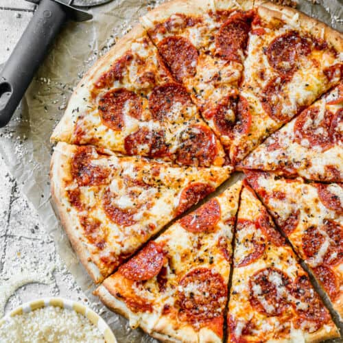

Pepperoni Pizza
Introduction

The pepperoni pizza originates from the U.S with pizza being created in Italy. The reason why I chose this food is because it's relatively easy to make and requires little to no cooking experience, and the number of ingredients isn't that long. I chose this image simply because it looks delicious and has multiple cooking methods.
Ingredients
Pizza Dough
- 2 ¼ teaspoons active dry yeast
- 2 teaspoon granulated sugar
- 1 ½ cups warm water
- 3 Tablespoons olive oil
- 1 ½ teaspoons salt
- 1 teaspoon white vinegar
- 3 ¾ – 4 cups bread flour (all-purpose flour would also work)
Toppings
- 1 cup pizza sauce homemade or good quality store-bought
- 2 cups pepperoni
- 4 cups shredded mozzarella cheese
- ½ cup freshly grated parmesan cheese
- 1 teaspoon Italian seasoning
Instructions
- Add yeast and ⅓ cup of water into your mixer and turn it on for 5 minutes then wait 10 minutes.
- Turn on for 10 minutes and gradually add flour until you get a doughy consistency
- Put it into a greased bowl and let it sit at room temperature for 1 - 1.5 hours to let it rise.
- Spread the dough out on a flat surface and add your pizza sauce, mozzarella cheese, and pepperoni onto the dough
- Heat the oven to 450°F and put the pizza onto a peel and put it into the oven for 12-15 minutes
- Take the pizza out and let it cool for 10 minutes then serve